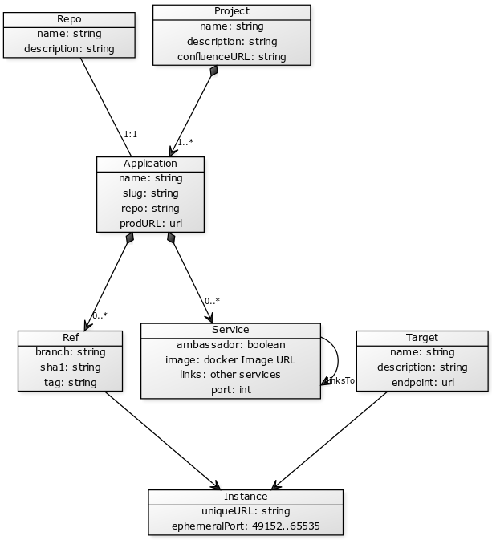

Orchestra
Orchestra is a set of tools that taken together make deploying and scaling web apps easy fast and cheap.
Most modern web applications comprise multiple core technologies including web servers, application servers, database servers, APIs and 3rd party web services. Orchestra was created to make deploying and scaling these web applications easy fast and cheap. Not only that, Orchestra is capable of deploying multiple web applications from different branches of the same Git repository to any target, making it an ideal tool for developers as well as DevOps.
Concepts
Project
This is a way to group related applications. Here for simplicity of illustration there is only one confluenceURL. In reality Projects will probably support multiple documentation URLs, and other fields. Project is the highest level conceptual group in Orchestra World. A project can contain 1 or more Applications.
Repo
Every app is a repo. That repo contains certain things, like an appdef.yml file at the root, and a folder for each service, each containing a Dockerfile and any files it needs
Application
This is the main focus of operations performed by SJC CLI and App Registry. The system will normally think in terms of Applications and Instances. For simplicity of illustration repo here is a string. In reality this will be object that can support multiple remotes and multiple protocols. There is one git repo per application. An Application can be thought of as all the files in that repo + all the information in it's appdef. It has a field called "slug" that must be unique among all other Applications. The fields in an appdef are defined here: appdef.(yaml|json). An Application can contain zero or more Services. However, if there are no Services, there is a lot that Orchestra cannot do. In this version of Orchestra, we restrict ourselves to dealing with deployments of web apps; therefore, we allow ourselves the luxury of assuming that Applications have at least 1 Service, and exactly 1 service that is flagged as "ambassador".
Ref
This system needs git. Like git, you have to be in a working directory to invoke commands on that app. Orchestra uses git's method of identifying a specific commit. Hence, it will usually deal with branches, but can work in "detached head" mode as well. You can think of a Ref exactly as you do with git: The Application in a certain, definite state.
Service
A Service is a Docker Container, in a addition to an agreed upon name (and some other metadata). For instance, a Django service will contain a Dockerfile, and the name "django", which allows other services to know how to link to it. An Application is composed of 1 or more Services, usually linked in a specified way. One of the services is designated the "ambassador", which is how Orchestra knows which Service to assign an ephemeral port to, and to expose it's reverse proxy to. The "services" section of appdef.yml follows closely the docker-compose.yml format. This is by design. Indeed, appdef.yml could be seen as a superset of docker-compose.yml.
Target
A target is a host, or a cluster of hosts acting as one. Targets contain information on how to "unpack" the docker app, and that information can vary from one Target to another (ex: A production endpoint will unpack an app and replace the MySQL service with RDS credential. A staging server may do the same, but with different credentials).
Instance
A Instance is what happens when a Ref is pushed to a Target. An instance has a unique and predictable URL, in addition to a unique and unpredictable ephermal port. It's address can be composed as Proejct.slug + Application.slug + Ref + Target.endpoint. ( ie: cerebrum.cms.CE-99-add-footer.staging.sjc.io ). The ephemeral port is used internally, and is not needed to construct an instance's address.
Components
Command Line Interface
The CLI is for invoking common commands. It's API and usage is inspired by CLIs like npm, git, docker, docker-compose, rsync, and ssh. Indeed most of it's actions invoke one or more of those utilities.
The command line interface is implemented in NodeJS 4 and communicates directly with the Docker daemon. All project definitions, dependencies, host information, docker files, etc are retrieved from a central registry.
Application Registry
This is a central service that acts as a global registry, keeping track of what applications in what state have been deployed to what endpoints. Every app declares it's features and properties with an appdef.yml file, that lives at it's root.
Application Registry is implemented as a REST API server on NodeJS 4, ExpressJS 4, Swagger 2 and MongoDB 3.
Reverse Proxy
This is the only exposed container, exposing itself by default on port 80. It links out to as many apps as needed using standard docker linking. Those apps, in turn, may link out to dependant services (like databases), but the Reverse Proxy is only aware of the ambasador service (ie: the web server). When a new Application is deployed to a new Target, that target stops accepting connections on one instance of it's Reverse Proxy, drains any remaining connections, and spins up a new Reverse Proxy with the newly added Application linked in. This should all happen in a failure tolerant, zero-downtime way
dogs
The Orchestra repository contains two trivial tutorial projects as Github submodules, Colours and Dogs. The respositories can used to try out SJC-CLI by spinning up/down projects based on Git branches.
colours
Similar to dogs, colours is an additional project that can be used with Orchestra to test multiple different projects being orchestrated on the same host simultaneously.
Notes:
Some primary dependencies include:- NodeJS 4.x
- jshon
- Docker Machine for Windows and OSX